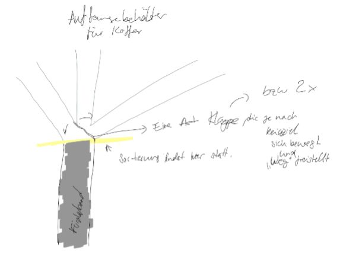
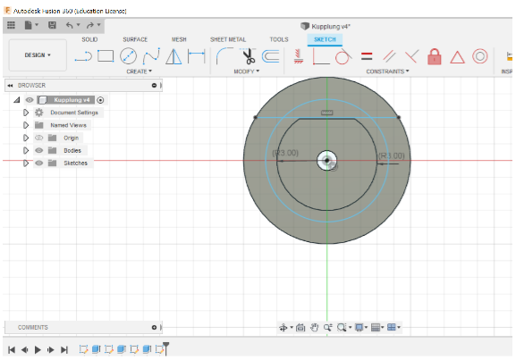
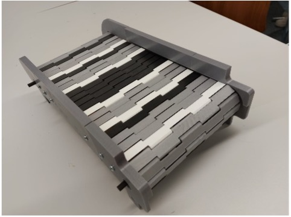
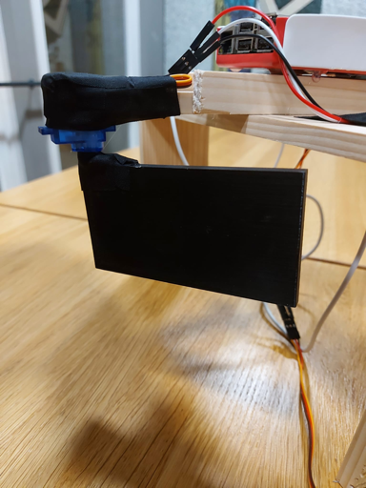
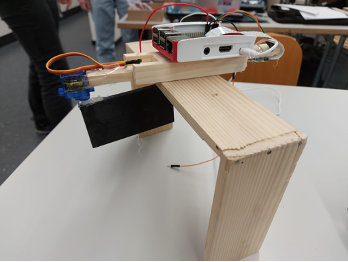

Bedienungsanleitung
- Raspberry Pi mit Micro-USB einstecken. Dann einige Zeit warten bis der Raspberry Pi bereit ist (max 1.5 minuten - Man erkennt, dass der Raspberry Pi bereit ist, wenn der Sortierer in der Mitte ist.)
- Koffer mit dem QR Code, der nach oben zeigt, unter der Kamera platzieren.
- Auf den Knopf drücken, um die Sortierung zu starten.
Achtung: Bevor man den nächsten Koffer auf das Band legt und erneut auf den Knopf drückt, muss man warten, bis das Förderband anhält.
Mögliche Probleme: Es könnte sein, dass das Förderband klemmt. Dann sollte man das Förderband leicht verschieben.
Projektbeschreibung
Die mini-Gepäckstücke werden von den “Reisenden” auf ein Förderband gelegt, welches auf Knopfdruck zu laufen beginnt. Die Gepäckstücke sind ihrer Destination entsprechend mit einem bestimmten QR-Code versehen. Zuerst wird der QR-Code von einer Kamera eingelesen. Je nach QR-Code bzw. Destination dreht sich die Trennwand und bedeckt dabei eine bestimmte Seite des Förderbandes ab, welches dann die Richtung des Gepäcks bestimmt. Das Gepäck rollt dann auf dem Förderband weiter und kommt anschliessend in den entsprechenden Behälter. Die Gepäcksortierungsanlage wird mit Raspberry Pi angesteuert.
Aufbau: Die einzelnen Elemente
-
Gepäck und QR-Codes:
Die Gepäckstücke sind mit QR-Codes versehen und kommen nach der erfolgreichen Sortierung in den entsprechenden Behälter.
-
Förderband:
Das Förderband wurde vollständig 3D- gedruckt und wird mit einem Servo 360 Motor angetrieben.
-
Sortierer:
Die eigentliche Trennwand ist eine rechteckig und wurde 3D-gedruckt. Es ist an einem Servo Motor befestigt. Der Motor steuert die Bewegung der Trennwand.
-
Holzgerüst:
Dieses Gerüst dient Hauptsächlich als Halterung. An dieser Holzkonstruktion, der Raspberry Pi befestigt ist. Weiter vorne ist die Kamera dran befestigt und am hinteren Ende ist der Motor mit der Trennwand angemacht.
-
Das Programm:
Die Anlage wird mit dem Raspberry Pi angesteuert. Die QR-Codes werden mit einer Kamera eingelesen. Für das Programm wurde Python im Zusammenhang mit OpenCV benutzt. OpenCV hat einen QR-Code-Detektor, mit dem leichten QR-Code in Bildern finden kann. Das ganze Programm wurde in einer Datei geschrieben. Sobald der Knopf gedrückt wird, wird nach QR-Codes gesucht. Falls einer gefunden wird, wird der Koffer sortiert, sonst wird die While-Loop nach 15 Sekunden abgebrochen.
Arbeitsprozess
-

Planung:
Wir sind schnell auf die Grundidee unserer Anlage gestossen. Der erste Schritt nach der Ideensammlung war mehrere Skizzen zu unserem Projekt zu erstellen. Wir haben uns einen Groben Zeitplan gemacht und die Aufgaben aufgeteilt. Es fand ein stetiger Austausch über den Forstschritt der Arbeit zwischen uns statt. Wir haben die einzelnen Elemente individuell vorbereitet und zu einem späteren Zeitpunkt zusammengefügt.
-
Gepäck, QR-Codes und Behälter:
Die Mini- Gepäckstücke sind Zündholzschachteln, die mit farbigem Papier beklebt wurden. Die QR-Codes wurden mit Hilfe einer Website (25.11.21) generiert . Sie wurden danach auf die Gepäckstücke geklebt. Den Behälter haben wir aus einer alten Müslischachtel gebastelt.
-
Förderband:
Wir wollten zuerst das Förderband aus Holz und Zahnriemen bauen. Jedoch haben wir keine zufriedenstellende Zahnriemen gefunden. Da sind wir auf die Idee gekommen das Band aufgrund der hohen Personalisierbarkeit mit einem 3D-Drucker auszudrucken. Nach kurzer Suche im Internet sind wir auf ein Förderband gestossen, welches komplett 3D-gedruckt wurde. Wir haben uns dann beschlossen dies ebenfalls zu tun. Die fertigen STL-Dateien haben wir auf der Webseite «Thingiverse» (15.10.21) gefunden. Der 3D-Druck dauerte sehr lange. Das Förderband ist von Innen mit Holz gestützt. Die einzelnen Teile des Bandes werden mit PLA-Filamentstücke zusammengehalten. Diese mussten wir zuschneiden und danach einfädeln. Eines der grössten Schwierigkeiten war es die richtige Anzahl an «Links» für das Band zu haben. Weitere kleine Anpassungen mussten vorgenommen werden, bis wir die gewünschte «Geschmeidigkeit» erzielt hatten. Wir konnten zunächst keinen Motor finden der stark genug war, um das Band anzutreiben. Wir haben einen Stepper Motor und einen DC-Motor ausprobiert. Schlussendlich hat es mit einem 360 Servo Motor funktioniert. Wir mussten eine Kupplung designen, um den Motor mit der Achse des Förderbands zu verbinden. Die Kupplung ist ein kleiner Plastikzylinder mit Einkerbungen, die der Grösse und Form der Achsen entsprechen. Eine weitere Schwierigkeit war die Kupplung jedes Mal neu zu designen und auszudrucken.
  -

Der Sortierer:
Wir hatten mehrere Ideen über wie die Sortierung geschehen könnte. Am funktionstüchtigsten war ein Dividier bzw. Trennwand, der eine Seite des Förderbands absperrt und somit dem Gepäck eine bestimmte Richtung vorgibt. Die rechteckige Trennwand haben wir selbst mit dem Programm Autodesk Fusion designed und haben es ebenfalls mit einem 3D-Drucker an der Schule ausgedruckt. Die Trennwand wird mit einem 180° Servo Motor bewegt.
-

Holzgerüst:
Nachdem wir alle nötigen Maße für das Gerüst hatten, haben wir das Holz zurecht gesägt. Diese Holzkonstruktion wird durch Nägel zusammenhalten. Die anderen Elemente des Projekts wurden dann angeschraubt bzw. angeklebt.
-
Zusammenbau der ganzen Anlage:
Das Förderband muss zuerst platzierten werden. Danach stellt man das Gerüst und den Behälter an ihren Plätzen hin. Wir haben Tape benutzt um die ganzen Kabel unter Kontrolle zu bekommen.
-
Das Programm:
Wir haben zuerst probiert es mit dem ESP32 hinzubekommen, aber weil der ESP Micro Python benutzt und auch weil es keinen guten Driver für die Kamera hat, haben wir uns entschieden den Raspberry Pi zu verwenden. Mit dem Raspberry, der Raspi Cam und OpenCV war es dann ziemlich leicht QR-Codes zu lesen.
-
HTML-Dokumentation
Die Bilder für die Webseite wurden während dem Arbeiten gemacht. Die HTML-Dokumentation wurde mit CSS gestyled. Wir zudem 3rd Party Library verwendet (Scrollmagic, Google Fonts), um den Effekt des Abspielen des Videos während dem Scrollen zu erreichen und um eine andere Schriftart zu benutzen. Die Webseite wurde online gestellt damit beide sehr einfach Zugang haben.